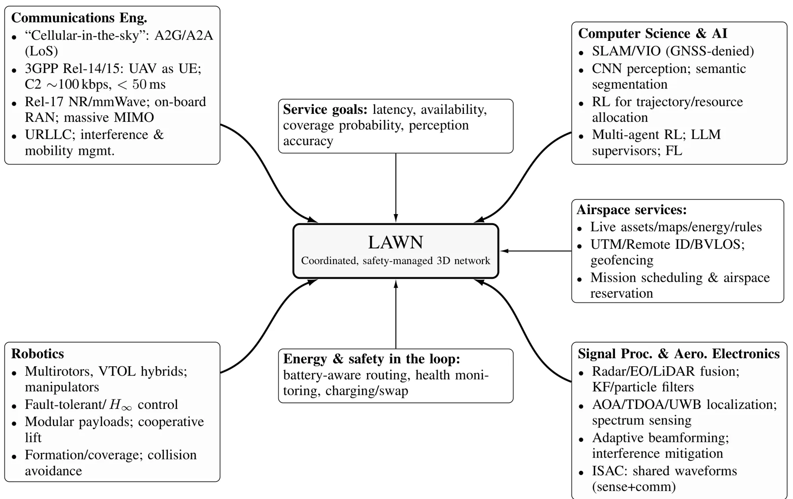
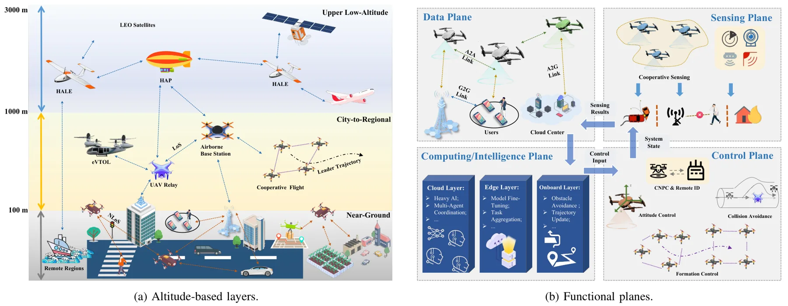
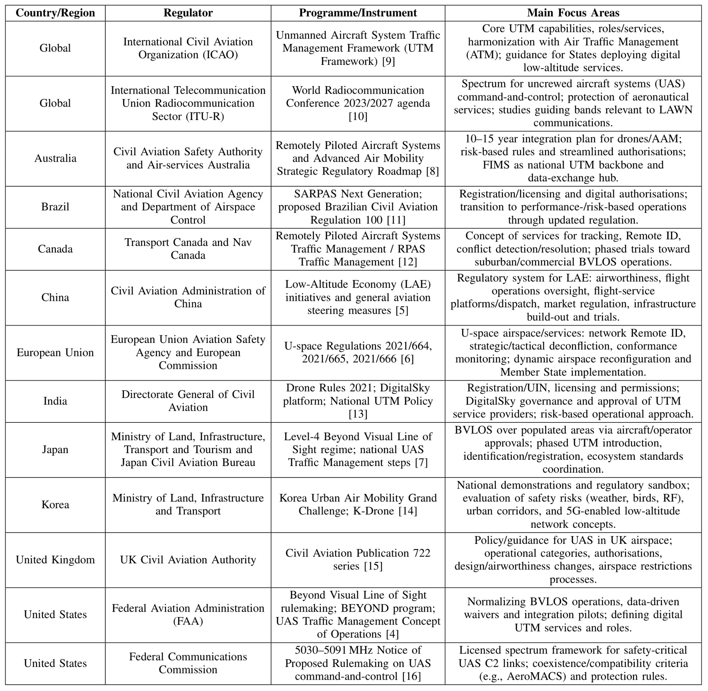
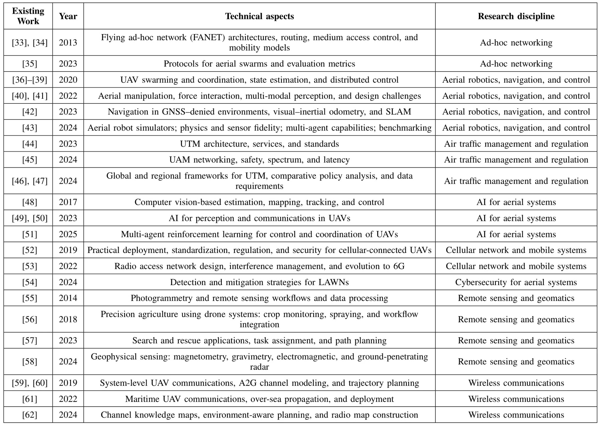
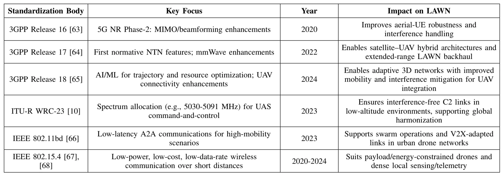

迈向智能低空：低空无线网络的信号处理与 AI 基础Toward Intelligent Skies: Signal Processing and AI Foundations of Low-Altitude Wireless Networks
覆盖 UAV 三维网络中的定位、跟踪和卫星—空中—地面协同，可补充 GNSS/机会信号定位背景；属于宽口径教程而非新增定位算法。
一句话工作总结
从三维信道、定位跟踪到 AI 与数字孪生，给出低空通信—感知—控制网络的系统性路线图。
摘要
该教程系统讨论低空无线网络这一动态可重构三维基础设施。内容覆盖高度分层与功能平面、监管和标准化、三维信道及系统模型、性能指标、波形和接收机设计、定位与跟踪、多功能协同设计，以及用于感知、控制、资源管理和安全的判别式与生成式 AI。文中还以卫星、高空和地面节点构成的 AI 驱动多层网络为案例，并总结实验、可靠性、安全性和标准化挑战。
The rapid growth of low-altitude aerial services and applications, driven by uncrewed aerial vehicles (UAVs), calls for a new class of digital infrastructure beyond conventional terrestrial networks. The low-altitude wireless network (LAWN) has been proposed as dynamically reconfigurable three-dimensional architectures that integrate aerial and ground nodes to provide connectivity, sensing, and control in open, safety-critical airspace. This tutorial presents a comprehensive treatment of LAWNs from the joint perspectives of artificial intelligence (AI) and signal processing. We first review the historical evolution and architectural foundations of LAWNs, introducing altitude-based layers and functional planes, and summarizing the regulatory and standardization landscape. Building on this system view, we then discuss signal processing fundamentals for LAWNs, including 3D channel and system models, performance metrics, waveform and receiver design, localization and tracking, and multi-functionality co-design. Next, we survey AI techniques for LAWNs, covering discriminative and generative models for perception, control, resource management, and security, as well as emerging paradigms such as foundation models, large language models, and digital twins for mission planning and closed-loop optimization. To illustrate AI-signal processing integration in practice, we provide a case study of an AI-driven multi-tier LAWN with hybrid satellite, high-altitude, and ground nodes. The tutorial concludes by outlining key research challenges in architecture design, signal processing-AI co-design, safety and security, experimentation, and standardization, and by highlighting opportunities for LAWNs to evolve into dependable, AI-native infrastructure for the intelligent skies.
中文解读摘录
图表/页面预览
{kind=link}

{kind=link}

{kind=link}

{kind=link}

{kind=link}
